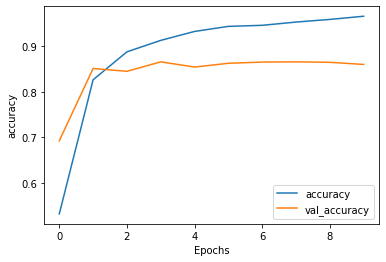
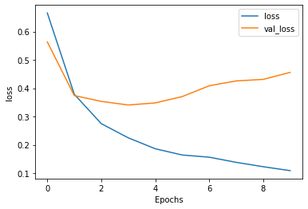
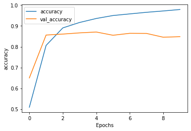
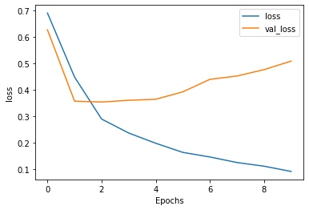

IMDB影评的情感分析任务
学习目标
了解影评情感分析任务和IMDB数据集。
掌握使用RNN模型完成IMDB影评情感分析任务的实现流程。
掌握对比不同隐层的RNN模型对情感分析任务的影响。
任务说明
对IMDB影评语料进行情感分析，是NLP中典型的应用案例，它的输入是一段文本，输出该段文本为“积极”或“消极”的态度，这是典型的二分类任务。与此同时，我还将在此任务基础上对所使用的RNN模型进行改进，增加更多的隐层来比较最终的效果！
数据集说明
review label
"Once again Mr. Costner has dragged out a movie for far longer than necessary. Aside from the terrific sea rescue sequences, of which there are very few I just did not care about any of the characters" neg
"This is an example of why the majority of action films are the same. Generic and boring, there's really nothing worth watching here. A complete waste of the then barely-tapped talents of Ice-T and Ice" neg
"Finally, the golf scenes are well photographed. Although the course used in the movie was not the actual site of the historical tournament, the little liberties taken by Disney do not detract from the beauty of the film." pos
...
内容说明:
review代表用户影评文本，label代表评论的情感极性，有pos和neg两种，分别代表积极和消极.
直接下载的数据是经过处理的tfrecord二进制文件(压缩文件)，以上预览是通过还原的文本内容.
使用GRU模型实现文本生成任务的步骤
第一步：使用TFDS下载IMDB数据集，并划分训练集和测试集
第二步：按batch划分数据并训练单层biLSTM模型
第三步：训练双层bi-LSTM模型，对比效果
第一步: 使用TFDS下载IMDB数据集，并划分训练集和测试集
from __future__ import absolute_import , division , print_function , unicode_literals
# TFDS介绍: tensorflow datasets的缩写，由tensorflow官方提供的标准数据集工具，
# 截止到2020年2月，共包含可使用的不同数据集数量155个，同时提供在加载过程中，
# 对数据集的多种操作，满足后续对dataset的使用.
# tfds安装: pip install tensorflow_datasets==2.0.0
import tensorflow_datasets as tfds
import tensorflow as tf
# 打印tensorflow版本
print ( "Tensorflow Version:" , tf . __version__ )
# 使用tfds加载数据集，其中参数with_info=True代表返回数据相关信息，包括数据进行数值映射的方式等。
# 参数as_supervised=True, 代表返回的数据为监督数据即需要将data和对应的label以一个元组的方式(data, label)返回。
dataset , info = tfds . load ( 'imdb_reviews/subwords8k' , with_info = True ,
as_supervised = True )
# 返回的dataset对象是一个字典形式，直接取train和test作为训练集和验证集
train_dataset , test_dataset = dataset [ 'train' ], dataset [ 'test' ]
# 从dataset的info对象中可以获得子词数值映射器或称为子词数值编码器（encoder）
# 关于子词数值映射的概念下方有详细说明
encoder = info . features [ 'text' ] . encoder
# 从子词数值映射器中取出它映射过的非重复子词数量
print ( 'Vocabulary size: {}' . format ( encoder . vocab_size ))
Tensorflow Version: 2.1.0-rc2
Vocabulary size: 8185
子词数值映射(也称子词编码器):
文本的子词数值映射是文本数值映射的拓展，基本的文本数值映射是将每个英文单词映射成一个词汇，如hello映射成数值1，而文本子词映射可能将hello拆分成子词如：hell和o，分别映射成对应的数值34和6，这样相当于将hello映射成34和6。文本子词数值映射在英文文本生成任务中使用频繁，因为子词的多样组合使得模型对不同的文本输入更加友好，不再局限于训练语料大小。在TFDS中，对该文本语料都使用了该技巧。
# 样例字符串hello tensorflow
sample_string = 'Hello TensorFlow.'
# 使用encoder进行映射（编码）并查看结果
encoded_string = encoder . encode ( sample_string )
print ( 'Encoded string is {}' . format ( encoded_string ))
# 之后使用对应的方法decode进行解码并查看结果
original_string = encoder . decode ( encoded_string )
print ( 'The original string: "{}"' . format ( original_string ))
Encoded string is [4025, 222, 6307, 2327, 4043, 2120, 7975]
The original string: "Hello TensorFlow."
# 断定解码字符串与原样例字符串相同
assert original_string == sample_string
# 为什么原来两个单词会映射成5个数值呢？
# 我们将每个数值进行解码查看，发现它们都是原单词的子词（原单词的一部分）
for index in encoded_string :
print ( '{} ----> {}' . format ( index , encoder . decode ([ index ])))
4025 ----> Hell
222 ----> o
6307 ----> Ten
2327 ----> sor
4043 ----> Fl
2120 ----> ow
7975 ----> .
第二步：按batch划分数据并训练单层biLSTM模型
# 定义shuffle时的缓存大小
BUFFER_SIZE = 10000
# 定义训练批次大小
BATCH_SIZE = 64
# 打乱训练数据
train_dataset = train_dataset . shuffle ( BUFFER_SIZE )
# 划分批次，并做批次内最大长度补齐，使每个批次输入都是一个矩阵
# 训练集划分
train_dataset = train_dataset . padded_batch ( BATCH_SIZE , train_dataset . output_shapes )
# 验证集划分
test_dataset = test_dataset . padded_batch ( BATCH_SIZE , test_dataset . output_shapes )
# 模型结构
# 首层为embedding层
# 之后双向LSTM层
# 全连接层
# 输出层(全连接层)
model = tf . keras . Sequential ([
tf . keras . layers . Embedding ( encoder . vocab_size , 64 ),
tf . keras . layers . Bidirectional ( tf . keras . layers . LSTM ( 64 )),
tf . keras . layers . Dense ( 64 , activation = 'relu' ),
tf . keras . layers . Dense ( 1 , activation = 'sigmiod' )
])
# 使用二分类交叉熵损失，并且from_logits设置为True，即保留y_pred的真实值，不进行强制为0或1
# 优化器是Adam
# 评估指标为准确率
model . compile ( loss = tf . keras . losses . BinaryCrossentropy ( from_logits = True ),
optimizer = tf . keras . optimizers . Adam ( 1e-4 ),
metrics = [ 'accuracy' ])
# 指定训练集和验证集和轮数进行训练
# 这里指定验证过程的总步数为30以防止验证时间过久
history = model . fit ( train_dataset , epochs = 10 ,
validation_data = test_dataset ,
validation_steps = 30 )
Train for 391 steps, validate for 30 steps
Epoch 1/10
391/391 [==============================] - 48s 123ms/step - loss: 0.6656 - accuracy: 0.5314 - val_loss: 0.5635 - val_accuracy: 0.6922
Epoch 2/10
391/391 [==============================] - 44s 112ms/step - loss: 0.3783 - accuracy: 0.8263 - val_loss: 0.3738 - val_accuracy: 0.8510
Epoch 3/10
391/391 [==============================] - 44s 111ms/step - loss: 0.2747 - accuracy: 0.8876 - val_loss: 0.3534 - val_accuracy: 0.8448
Epoch 4/10
391/391 [==============================] - 44s 113ms/step - loss: 0.2247 - accuracy: 0.9128 - val_loss: 0.3405 - val_accuracy: 0.8656
Epoch 5/10
391/391 [==============================] - 43s 111ms/step - loss: 0.1862 - accuracy: 0.9324 - val_loss: 0.3479 - val_accuracy: 0.8542
Epoch 6/10
391/391 [==============================] - 44s 113ms/step - loss: 0.1640 - accuracy: 0.9436 - val_loss: 0.3703 - val_accuracy: 0.8625
Epoch 7/10
391/391 [==============================] - 44s 113ms/step - loss: 0.1562 - accuracy: 0.9459 - val_loss: 0.4085 - val_accuracy: 0.8651
Epoch 8/10
391/391 [==============================] - 44s 113ms/step - loss: 0.1381 - accuracy: 0.9530 - val_loss: 0.4257 - val_accuracy: 0.8656
Epoch 9/10
391/391 [==============================] - 44s 112ms/step - loss: 0.1226 - accuracy: 0.9589 - val_loss: 0.4311 - val_accuracy: 0.8646
Epoch 10/10
391/391 [==============================] - 44s 113ms/step - loss: 0.1087 - accuracy: 0.9658 - val_loss: 0.4558 - val_accuracy: 0.8599
import matplotlib.pyplot as plt
# 根据训练历史日志和对应的评估指标绘制曲线
def plot_graphs(history, metric):
# 绘制训练曲线
plt.plot(history.history[metric])
# 绘制验证曲线
plt.plot(history.history['val_'+metric], '')
# 横坐标为epochs
plt.xlabel("Epochs")
# 纵坐标为对应指标
plt.ylabel(metric)
# 图中曲线说明框
plt.legend([metric, 'val_'+metric])
plt.show()
# 进行准确率和损失的绘制
plot_graphs(history, 'accuracy')
plot_graphs(history, 'loss')


test_loss , test_acc = model . evaluate ( test_dataset )
print ( 'Test Loss: {}' . format ( test_loss ))
print ( 'Test Accuracy: {}' . format ( test_acc ))
391/391 [==============================] - 33s 84ms/step - loss: 0.5256 - accuracy: 0.8432
Test Loss: 0.5255793487400655
Test Accuracy: 0.8431599736213684
第三步：训练双层bi-LSTM模型，对比效果
# 结构与上面的模型类似，只不过多加了一层双向LSTM
# return_sequences=True表示将返回每一个时间步的综合结果(结果张量进行拼接)。
# 为了防止过拟合，还加入了dropout层
model = tf . keras . Sequential ([
tf . keras . layers . Embedding ( encoder . vocab_size , 64 ),
tf . keras . layers . Bidirectional ( tf . keras . layers . LSTM ( 64 , return_sequences = True )),
tf . keras . layers . Bidirectional ( tf . keras . layers . LSTM ( 32 )),
tf . keras . layers . Dense ( 64 , activation = 'relu' ),
tf . keras . layers . Dropout ( 0.5 ),
tf . keras . layers . Dense ( 1 )
])
# 与第一个模型相同
# 二分类交叉熵损失
# Adam优化器
# 准确率为评估指标
model . compile ( loss = tf . keras . losses . BinaryCrossentropy ( from_logits = True ),
optimizer = tf . keras . optimizers . Adam ( 1e-4 ),
metrics = [ 'accuracy' ])
# 模型训练拟合
history = model . fit ( train_dataset , epochs = 10 ,
validation_data = test_dataset ,
validation_steps = 30 )
Train for 391 steps, validate for 30 steps
Epoch 1/10
391/391 [==============================] - 82s 209ms/step - loss: 0.6905 - accuracy: 0.5090 - val_loss: 0.6268 - val_accuracy: 0.6500
Epoch 2/10
391/391 [==============================] - 77s 198ms/step - loss: 0.4483 - accuracy: 0.8062 - val_loss: 0.3569 - val_accuracy: 0.8562
Epoch 3/10
391/391 [==============================] - 78s 198ms/step - loss: 0.2891 - accuracy: 0.8906 - val_loss: 0.3535 - val_accuracy: 0.8609
Epoch 4/10
391/391 [==============================] - 78s 198ms/step - loss: 0.2364 - accuracy: 0.9166 - val_loss: 0.3601 - val_accuracy: 0.8667
Epoch 5/10
391/391 [==============================] - 78s 198ms/step - loss: 0.1974 - accuracy: 0.9359 - val_loss: 0.3640 - val_accuracy: 0.8708
Epoch 6/10
391/391 [==============================] - 78s 200ms/step - loss: 0.1629 - accuracy: 0.9502 - val_loss: 0.3921 - val_accuracy: 0.8552
Epoch 7/10
391/391 [==============================] - 77s 197ms/step - loss: 0.1454 - accuracy: 0.9580 - val_loss: 0.4394 - val_accuracy: 0.8646
Epoch 8/10
391/391 [==============================] - 78s 200ms/step - loss: 0.1244 - accuracy: 0.9656 - val_loss: 0.4521 - val_accuracy: 0.8641
Epoch 9/10
391/391 [==============================] - 78s 198ms/step - loss: 0.1108 - accuracy: 0.9721 - val_loss: 0.4762 - val_accuracy: 0.8458
Epoch 10/10
391/391 [==============================] - 77s 198ms/step - loss: 0.0906 - accuracy: 0.9791 - val_loss: 0.5085 - val_accuracy: 0.8484
# 绘制损失和准确率对照曲线
plot_graphs ( history , 'accuracy' )
plot_graphs ( history , 'loss' )


test_loss , test_acc = model . evaluate ( test_dataset )
print ( 'Test Loss: {}' . format ( test_loss ))
print ( 'Test Accuracy: {}' . format ( test_acc ))
391 / 391 [ ============================== ] - 33 s 84 ms / step - loss : 0.5256 - accuracy : 0.8432
Test Loss : 0.5255793487400655
Test Accuracy : 0.8431599736213684
对比分析:
在IMDB数据集的25000条训练数据下，单层biLSTM的验证准确率为: 0.8578, 双层biLSTM的验证准确率为: 0.8432, 相比之下，模型准确率没有因为层数的增加而提升，反倒略微下降。说明在该大小的文本数据量级上，使用层数更多的LSTM并不能提升模型准确率，模型优化可以从其他超参数或工程技巧入手。